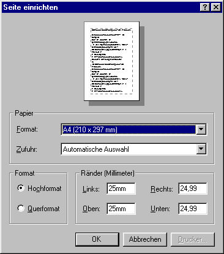
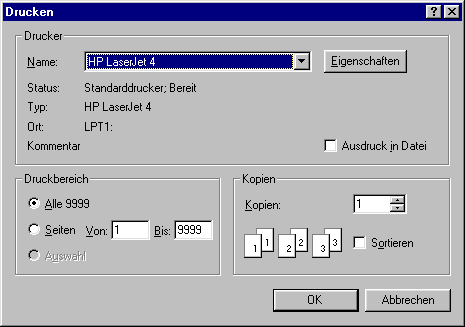

35.2 Drucken mit dem Java 2D Printing API
35.2.1 Überblick
Die Klassen und Interfaces des Java 2D Printing API befinden sich
in dem Paket java.awt.print.
Es stellt zwei unterschiedliche Arten von Funktionen zur Verfügung:
- Die Klasse PrinterJob
ist für die Kontrolle des Druckauftrags verantwortlich.
Sie dient zum Aufrufen der plattformspezifischen Konfigurationsdialoge,
registriert die Objekte zur Seitenausgabe und startet den eigentlichen
Druckvorgang.
- Der eigentliche Ausdruck wird von Objekten des Typs Printable
oder Pageable
erledigt. Sie werden beim PrinterJob
registriert und zu geeigneter Zeit von diesem mit der Ausgabe der
Druckdaten beauftragt.
Es stehen zwei unterschiedliche Konfigurationsdialoge zur Verfügung.
Mit dem einen können Job-Parameter wie Anzahl der Kopien,
auszudruckende Seiten oder der Druckertyp eingestellt
werden. Der andere dient zur Einstellung von Seitenparametern, mit
denen etwa das Papierformat, die Seitengröße oder die Randeinstellungen
konfiguriert werden können. Beide Dialoge sind optional und können
auch unterdrückt werden. Alle mit ihrer Hilfe konfigurierbaren
Parameter können auch programmgesteuert verändert werden.
35.2.2 Zusammenspiel der Klassen
Die Klasse PrinterJob
Die abstrakte Klasse PrinterJob
aus dem Paket java.awt.print
repräsentiert einen Druckauftrag und ist Ausgangspunkt für
alle Druckaktivitäten. Sie besitzt eine statische Methode getPrinterJob,
mit der Instanzen erzeugt werden können. Zudem besitzt PrinterJob
einige Methoden, mit denen globale Eigenschaften des Druckauftrags
kontrolliert werden können:
public static PrinterJob getPrinterJob()
public String getUserName()
public int getCopies()
public void setCopies(int copies)
public void setJobName(String jobName)
public String getJobName()
public void cancel()
public boolean isCancelled()
|
java.awt.print.PrinterJob |
getUserName
liefert den Namen des Benutzers, der den Job gestartet hat. getCopies
und setCopies
erlauben den Zugriff auf die Anzahl der Kopien, die ausgedruckt werden
sollen. Mit getJobName
und setJobName
kann der Name des Druckjobs abgefragt bzw. eingestellt werden. Durch
Aufruf von cancel
kann ein laufender Druckjob abgebrochen werden und schließlich
liefert isCancelled
den Rückgabewert true,
falls während eines laufenden Druckjobs cancel
aufgerufen wurde und der Job bei der nächstmöglichen Gelegenheit
beendet wird.
Die Klassen Paper und PageFormat
Neben den eigentlichen Druckdaten besitzt eine auszudruckende Seite
parametrisierende Eigenschaften wie Papiergröße und Randeinstellungen.
Diese werden durch die Klassen PageFormat
und Paper
gekapselt. Paper
repräsentiert ein Blatt Papier mit festgelegten Abmessungen für
Breite, Höhe und bedruckbaren Bereich:
public double getHeight()
public double getWidth()
public double getImageableX()
public double getImageableY()
public double getImageableWidth()
public double getImageableHeight()
|
java.awt.print.Paper |
getHeight
und getWidth
liefern die Höhe bzw. Breite des Papierblatts. getImageableX
und getImageableY
geben den Abstand des bedruckbaren Bereichs vom oberen bzw. linken
Blattrand an. getImageableWidth
und getImageableHeight
geben die Breite bzw. Höhe des bedruckbaren Bereichs an.
Die Klasse PageFormat
kapselt ein Paper-Objekt
und dessen Orientierung:
public static final int PORTRAIT
public static final int LANDSCAPE
public static final int REVERSE_LANDSCAPE
|
java.awt.print.PageFormat |
Ist die Orientierung PORTRAIT,
wird das Blatt in seiner Standardausrichtung verwendet. Es ist also
höher als breit und der Koordinatenursprung befindet sich links
oben. Beim Drucken im LANDSCAPE-Modus
wird das Papier quer verwendet und der rechte Rand des Ausdrucks liegt
am oberen Blattrand. REVERSE_LANDSCAPE
druckt ebenfalls quer, aber mit umgekehrter Druckrichtung.
PageFormat
stellt Methoden zum Zugriff auf das Papier, seine Orientierung und
die aus Paper
bekannten Methoden zum Zugriff auf die Seitenabmessungen zur Verfügung:
public Paper getPaper()
public int getOrientation()
public double getHeight()
public double getWidth()
public double getImageableX()
public double getImageableY()
public double getImageableWidth()
public double getImageableHeight()
|
java.awt.print.Paper |
Ein PageFormat-Objekt
wird gewöhnlich mit der Methode defaultPage
der Klasse PrinterJob
beschafft:
Es kann dann entweder programmgesteuert oder durch Aufruf des Seitendialogs
konfiguriert werden.
Die Konfigurationsdialoge
Die Klasse PrinterJob
besitzt zwei Konfigurationsdialoge. Der erste dient zur Konfiguration
eines PageFormat-Objekts
und wird mit pageDialog
aufgerufen. Der zweite dient zur Konfiguration der globalen Job-Parameter
und wird mit printDialog
aufgerufen:
pageDialog
erwartet ein PageFormat-Objekt
(das typischerweise durch defaultPage
erzeugt wird) und bietet dem Anwender die Möglichkeit, dessen
Eigenschaften zu verändern. Die dafür verwendeten Dialoge
sind plattformabhängig, die Windows-Variante ist in Abbildung 35.1
zu sehen.
Der Rückgabewert von pageDialog
ist das konfigurierte PageFormat-Objekt.
Hat der Anwender den Dialog mit »OK« beendet, wird eine
Kopie des als Parameter übergebenen Objekts erzeugt, mit den
Einstellungen des Anwenders versehen und an den Aufrufer zurückgegeben.
Hat der Anwender den Dialog dagegen abgebrochen, wird das unveränderte
Originalobjekt zurückgegeben. Durch Vergleichen der beiden Objektreferenzen
kann also unterschieden werden, ob der Druckvorgang fortgesetzt oder
abgebrochen werden soll.

Abbildung 35.1: Der Dialog zur Druckseitenkonfiguration unter Windows
Durch Aufruf von printDialog
wird der plattformspezifische Dialog zur Jobkonfiguration aufgerufen
(siehe Abbildung 35.2).
Er konfiguriert das PrinterJob-Objekt
und die Änderungen können mit den oben beschriebenen Methoden
abgefragt werden. Der boolesche Rückgabewert zeigt an, ob der
Dialog mit »OK« beendet oder abgebrochen wurde.

Abbildung 35.2: Der Dialog zur Druckjobkonfiguration unter Windows
Das Interface Printable
Nachdem wir die Konfiguration der Job- und Seiteneinstellungen besprochen
haben, wollen wir uns nun der Frage zuwenden, wie die eigentliche
Druckausgabe erzeugt wird. Dazu gibt es im Paket java.awt.print
ein Interface Printable,
das nur eine Methode enthält:
Ein Programm, das Druckausgaben erzeugen will, muss ein Objekt zur
Verfügung stellen, das dieses Interface implementiert. Es muss
mit der Methode setPrintable
an den PrinterJob
übergeben werden und wird von PrinterJob
automatisch aufgerufen, nachdem der Druckvorgang mit print
gestartet wurde:
public void setPrintable(Printable painter)
public void setPrintable(Printable painter, PageFormat format)
public void print()
throws PrinterException
|
java.awt.print.PrinterJob |
Printable
sorgt dabei für die Druckausgabe, ähnlich wie es paint
für die Bildschirmausgabe bei GUI-Komponenten tut. Jeder (von
PrinterJob
initiierte) Aufruf von print
fordert das Printable-Objekt
auf, eine bestimmte Seite auszudrucken. Der Seitenindex wird dabei
in dem Parameter page übergeben,
dessen Zählung bei 0 beginnt.
Zur Erzeugung von Druckausgaben wird das übergebene Graphics-Objekt
verwendet, das wie bei der Erzeugung von Bildschirmausgaben verwendet
werden kann. Das übergebene Objekt kann dabei in ein Graphics2D-Objekt
konvertiert werden und stellt so die erweiterten Funktionen des 2D-API
zur Verfügung.
Weiterhin wird das konfigurierte PageFormat
als Argument an print
übergeben. Innerhalb von print
wird es dazu benutzt, die Größe des Papiers und dessen
bedruckbaren Bereich zu ermitteln.
Der Rückgabewert von print
gibt an, ob die Seitenzahl gültig war und die Druckausgabe erzeugt
werden konnte, oder ob eine ungültige Seitenzahl übergeben
wurde. Im ersten Fall gibt print
die in Printable
definierte Konstante PAGE_EXISTS
zurück, im zweiten Fall NO_SUCH_PAGE.
Da der PrinterJob
nicht von Anfang an weiß, wie viele Seiten insgesamt ausgedruckt
werden sollen, muss er beim Aufruf von print
schrittweise den Seitenzähler erhöhen und darauf warten,
dass NO_SUCH_PAGE
zurückgegeben wird. Danach erfolgen keine weiteren Aufrufe von
print.
Das Interface Pageable und die Klasse Book
Das Paket java.awt.print
stellt auch eine Abstraktion für mehrseitige Dokumente
zur Verfügung. Das Interface Pageable
definiert deren Eigenschaften:
public int getNumberOfPages()
public PageFormat getPageFormat(int pageIndex)
throws IndexOutOfBoundsException
public Printable getPrintable(int pageIndex)
throws IndexOutOfBoundsException
|
java.awt.print.Pageable |
Ein Pageable-Objekt
kennt (normalerweise) die Anzahl der auszudruckenden Seiten und stellt
diese auf Anfrage als Rückgabewert von getNumberOfPages
zur Verfügung. Wahlweise kann aber auch die Konstante UNKNOWN_NUMBER_OF_PAGES
zurückgegeben werden, wenn die Seitenzahl nicht von vorneherein
bekannt ist. Im Unterschied zu einem Printable-Objekt
(das ja auch mehrere Seiten ausdrucken kann), kann ein Pageable
zu den einzelnen Seiten unterschiedliche PageFormat-
und Printable-Objekte
zur Verfügung stellen. Sie werden während des Druckvorgangs
mit den Methoden getPageFormat
und getPrintable
abgefragt.
Mit der Klasse Book
stellt java.awt.print
eine konkrete Implementierung von Pageable
zur Verfügung. Ein Book
ist dabei nichts anderes als eine nach Seitenzahlen indizierte Liste
von (PageFormat/Printable)-Paaren,
die mit einigen einfachen Methoden gepflegt werden kann:
public void append(Printable painter, PageFormat pf)
public void append(Printable painter, PageFormat pf, int numPages)
public void setPage(int page, Printable painter, PageFormat pf)
throws IndexOutOfBoundsException
|
java.awt.print.Book |
Mit append
werden eine oder mehrere Seiten mit den angegebenen Printable-
und PageFormat-Objekten
an das Ende des Buchs angehängt. Mit setPage
kann gezielt eine bereits bestehende Seite verändert werden.
35.2.3 Ausdrucken einer Textdatei
Nach diesen Vorbemerkungen wollen wir uns ein Anwendungsbeispiel für
das Druck-API des JDK 1.2 ansehen. Dazu soll ein Programm geschrieben
werden, das beliebige Textdateien auf einem Drucker ausgeben kann.
Der Anwender soll sowohl Job- als auch Seitenparameter im Dialog verändern
können. Jede Seite soll mit einer Kopfzeile versehen werden,
die den Namen der Datei und die Seitenzahl enthält. Die Kopfzeile
soll fett gedruckt und unterstrichen werden. Der Textteil soll dunkelblau
gedruckt werden, sofern Farben unterstützt werden.
Die Hilfsklasse FilePrintHelper
Wir hatten oben erwähnt, dass die Methode print
des Printable-Objekts
mehrfach für eine einzelne Seite aufgerufen werden kann. Soll
eine Datei ausgedruckt werden, muss das Programm bei wiederholten
Besuchen derselben Seite in der Lage sein, an der Textstelle aufzusetzen,
die den Anfang der Seite markiert. Wir führen dazu eine Hilfsklasse
FilePrintHelper ein, die sich
zu jeder besuchten Seite deren Dateioffset merkt und auf Anfrage wieder
zur Verfügung stellt. Sie kann auch Auskunft darüber geben,
ob eine Seite überhaupt schon besucht wurde.
Die Implementierung der Klasse FilePrintHelper
sieht so aus:
001 /* FilePrintHelper.java */
002
003 import java.util.*;
004
005 public class FilePrintHelper
006 {
007 //---Membervariablen----------------------------------
008 List<Entry> pageinfo;
009
010 //---Konstruktor--------------------------------------
011 public FilePrintHelper()
012 {
013 pageinfo = new ArrayList<Entry>();
014 }
015
016 //---Seitendefinition und -abfrage--------------------
017 public void createPage(int page)
018 {
019 for (int i = pageinfo.size(); i <= page; ++i) {
020 pageinfo.add(new Entry());
021 }
022 }
023
024 public boolean knownPage(int page)
025 {
026 return page < pageinfo.size();
027 }
028
029 //---Verwaltung der Offsets---------------------------
030 public long getFileOffset(int page)
031 {
032 Entry entry = pageinfo.get(page);
033 return entry.fileoffset;
034 }
035
036 public void setFileOffset(int page, long fileoffset)
037 {
038 Entry entry = pageinfo.get(page);
039 entry.fileoffset = fileoffset;
040 }
041
042 //---Lokale Klasse Entry------------------------------
043 static class Entry
044 {
045 public long fileoffset;
046
047 public Entry()
048 {
049 this.fileoffset = -1;
050 }
051 }
052 }
|
FilePrintHelper.java |
Listing 35.1: Die Klasse FilePrintHelper
Die Klasse SimpleFilePrinter
Das Ausdrucken der Datei wird von der Klasse SimpleFilePrinter
erledigt. Ihre main-Methode
gliedert die zu erledigende Arbeit in folgende Teilaufgaben:
- Zunächst wird ein SimpleFilePrinter
instanziert. Er erzeugt durch Aufruf von getPrinterJob
eine Instanz der Klasse PrinterJob.
- In setupPageFormat wird
durch Aufruf von defaultPage
ein PageFormat
beschafft und zur Bearbeitung an den Seitendialog übergeben.
Die Methode prüft anschließend, ob der Dialog mit »OK«
oder »Abbrechen« verlassen wurde, und gibt entweder true
oder false
zurück (Letzteres führt in main
zum Abbruch des Druckvorgangs).
- In setupJobOptions wird
der Dialog zur Konfiguration der Job-Parameter aufgerufen. Auch hier
führt ein Abbruch des Anwenders zum Ende des gesamten Druckvorgangs.
- Schließlich wird in printFile
der eigentliche Druckvorgang angestoßen. Dazu wird zunächst
ein RandomAccessFile
für die auszudruckende Datei angelegt und ein FilePrintHelper
instanziert. Anschließend wird die Druckausgabe durch Aufruf
von print
gestartet.
Nachfolgend zeigen wir die Implementierung von SimpleFilePrinter.
Der eigentlich komplizierte Code steckt natürlich in der Methode
print,
die wir im Anschluss an das Listing erläutern wollen.
001 /* SimpleFilePrinter.java */
002
003 import java.awt.*;
004 import java.awt.print.*;
005 import java.io.*;
006
007 public class SimpleFilePrinter
008 implements Printable
009 {
010 //---Konstanten--------------------------------------
011 private static final int RESMUL = 4;
012
013 //---Membervariablen---------------------------------
014 private PrinterJob pjob;
015 private PageFormat pageformat;
016 private FilePrintHelper fph;
017 private String fname;
018 private RandomAccessFile in;
019
020 //---Konstruktoren-----------------------------------
021 public SimpleFilePrinter(String fname)
022 {
023 this.pjob = PrinterJob.getPrinterJob();
024 this.fname = fname;
025 }
026
027 //---Öffentliche Methoden----------------------------
028 public boolean setupPageFormat()
029 {
030 PageFormat defaultPF = pjob.defaultPage();
031 this.pageformat = pjob.pageDialog(defaultPF);
032 pjob.setPrintable(this, this.pageformat);
033 return (this.pageformat != defaultPF);
034 }
035
036 public boolean setupJobOptions()
037 {
038 return pjob.printDialog();
039 }
040
041 public void printFile()
042 throws PrinterException, IOException
043 {
044 fph = new FilePrintHelper();
045 in = new RandomAccessFile(fname, "r");
046 pjob.print();
047 in.close();
048 }
049
050 //---Implementierung von Printable-------------------
051 public int print(Graphics g, PageFormat pf, int page)
052 throws PrinterException
053 {
054 int ret = PAGE_EXISTS;
055 String line = null;
056 try {
057 if (fph.knownPage(page)) {
058 in.seek(fph.getFileOffset(page));
059 line = in.readLine();
060 } else {
061 long offset = in.getFilePointer();
062 line = in.readLine();
063 if (line == null) {
064 ret = NO_SUCH_PAGE;
065 } else {
066 fph.createPage(page);
067 fph.setFileOffset(page, offset);
068 }
069 }
070 if (ret == PAGE_EXISTS) {
071 //Seite ausgeben, Grafikkontext vorbereiten
072 Graphics2D g2 = (Graphics2D)g;
073 g2.scale(1.0 / RESMUL, 1.0 / RESMUL);
074 int ypos = (int)pf.getImageableY() * RESMUL;
075 int xpos = ((int)pf.getImageableX() + 2) * RESMUL;
076 int yd = 12 * RESMUL;
077 int ymax = ypos + (int)pf.getImageableHeight() * RESMUL - yd;
078 //Seitentitel ausgeben
079 ypos += yd;
080 g2.setColor(Color.black);
081 g2.setFont(new Font("Monospaced", Font.BOLD, 10 * RESMUL));
082 g.drawString(fname + ", Seite " + (page + 1), xpos, ypos);
083 g.drawLine(
084 xpos,
085 ypos + 6 * RESMUL,
086 xpos + (int)pf.getImageableWidth() * RESMUL,
087 ypos + 6 * RESMUL
088 );
089 ypos += 2 * yd;
090 //Zeilen ausgeben
091 g2.setColor(new Color(0, 0, 127));
092 g2.setFont(new Font("Monospaced", Font.PLAIN, 10 * RESMUL));
093 while (line != null) {
094 g.drawString(line, xpos, ypos);
095 ypos += yd;
096 if (ypos >= ymax) {
097 break;
098 }
099 line = in.readLine();
100 }
101 }
102 } catch (IOException e) {
103 throw new PrinterException(e.toString());
104 }
105 return ret;
106 }
107
108 //---Main--------------------------------------------
109 public static void main(String[] args)
110 {
111 SimpleFilePrinter sfp = new SimpleFilePrinter(args[0]);
112 if (sfp.setupPageFormat()) {
113 if (sfp.setupJobOptions()) {
114 try {
115 sfp.printFile();
116 } catch (Exception e) {
117 System.err.println(e.toString());
118 System.exit(1);
119 }
120 }
121 }
122 System.exit(0);
123 }
124 }
|
SimpleFilePrinter.java |
Listing 35.2: Die Klasse SimpleFilePrinter
In print
wird zunächst geprüft, ob die Seite schon einmal aufgerufen
wurde. Ist das der Fall, wird ihr Dateioffset vom FilePrintHelper
geholt und die erste Zeile der Seite erneut eingelesen. Falls nicht,
prüft die Methode, ob überhaupt noch weitere Daten vorhanden
sind. In diesem Fall übergibt sie den Dateioffset zur Speicherung
an den FilePrintHelper. Andernfalls
setzt sie den Rückgabewert auf NO_SUCH_PAGE
und die Ausgabe der Seite ist beendet.
Falls die Seite existiert, wird sie nun ausgegeben (im Listing ab
Zeile 072). Dazu wird
der Grafikkontext nach Graphics2D
konvertiert und anschließend auf den Kehrwert der Konstante
RESMUL skaliert. Da RESMUL
den Wert 4 hat, führt das dazu, dass alle Ausgaben um den Faktor
4 verkleinert werden. Dieser Kunstgriff wird angewendet, um bei der
Ausgabe nicht mit der groben Standardauflösung von 72 dpi arbeiten
zu müssen. Die auf diese Weise simulierten 288 dpi lassen die
Linie unter der Kopfzeile hinreichend dünn erscheinen. Sie wäre
ansonsten mit einem viel zu kräftigen 1/72 Zoll breiten Pixelstrich
gezeichnet worden. Da nun auch alle anderen Positions- und Längenangaben
um den Faktor 4 verkleinert werden, multiplizieren wir sie in den
folgenden Programmzeilen jeweils mit RESMUL
und skalieren sie so auf ihre normale Größe zurück.
Ab Zeile 079 wird der
Seitentitel ausgeben. Dazu wird die Schriftfarbe auf schwarz eingestellt
und eine fette Schrift ausgewählt. Die Variable ypos
repräsentiert den vertikalen Offset vom oberen Papierrand. Sie
wird am Anfang auf das obere Ende des bedruckbaren Bereichs gestellt
und nach jeder Zeile um einen konstanten Wert erhöht. Ab Zeile 091
werden die Textzeilen ausgegeben. Mit readLine
wird dazu in einer Schleife die jeweils nächste Zeile aus der
Eingabedatei gelesen und - wenn vorhanden - an der aktuellen y-Position
ausgegeben. Falls keine weiteren Zeilen vorhanden sind oder das Ende
des bedruckbaren Bereichs erreicht ist, wird die Schleife beendet.